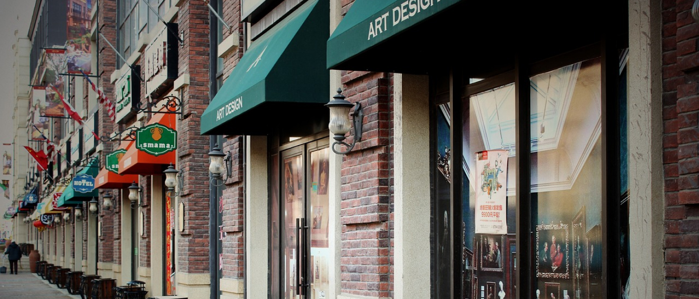
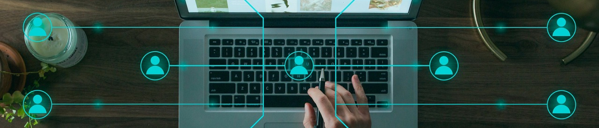
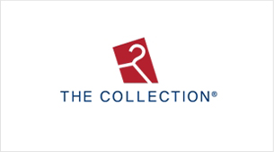
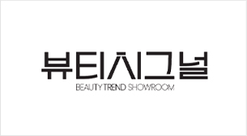
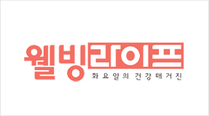
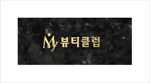

사업소개
사업소개
home > 사업소개 > GS SHOP
GS SHOP
Designing Life Together
고객의 모든 순간을 가치 있게 만드는
GS SHOP
GS SHOP은 1995년 우리나라에 처음으로 TV쇼핑을 선보였습니다.
TV쇼핑을 시작으로 인터넷, 모바일, 데이터 홈쇼핑 등 다양한 판매채널을 통해 고객에게 최고의 상품을 제공하고 있습니다.
앞으로도 GS SHOP만의 축적된 노하우와 고객 DATA분석을 통해 차별화된 고객 서비스를 제공해
고객이 상품을 구매하는 모든 과정에서 가치를 느낄 수 있도록 노력하겠습니다.
브랜드소개
-

-
GS SHOP이 지향하는 핵심가치인 'Real(진정성)'이 괄호 안에 담겨있음을 형상화한 것입니다.
GS SHOP은 가치가 있는 상품과 서비스에 진심을 담아, 고객의 가장 좋은 선택을 만듭니다.
비즈니스 핵심역량
-
다양한 판매 채널
-

DATA/AI기반 매장 운영
-
프리미엄 브랜드
-
차별화 된 고객서비스
-
콘텐츠 제작 역략
소비자중심경영 실천하는 GS SHOP
GS SHOP은 소비자의 목소리를 가장 먼저 듣고, 나누고, 공감하는 CCM 인증기업입니다.
-
- CCM(Consumer Centered Management) 인증 이란?
-
기업이 수행하는 모든 활동을 소비자 관점에서
소비자 중심으로 구성하고 관련 경영활동을 지속적으로 개선하고 있는지를
평가하여 인증하는 제도
-
- 경영 전 과정에 CCM 도입
- 소비자중심경영 실천을 위해 경영 전 과정에 CCM의 가치와 철학을 반영
- 고객불만 사전예방 시스템 체계를 구축하고 체계적인 CCM 관리지표 운영
-
- 소비자 권익 증진 노력
- '소비자분쟁해결기준' 보다 소비자에게 유리한 'CS처리지침 및 고객서비스 정책' 마련
- 협력사와 상생경영을 통해 소비자 권익증진 협업시스템 운영
-
- 소비자 효용을 증대한
우수한 서비스 - 고객의 라이프 스타일을 반영한 서비스 시행
-
- '라이브(LIVE) 배송 서비스',
'안심택배 서비스', '편의점 픽업/반품
서비스' 등 고객 Needs에 부합하는
다양한 배송 서비스 실시
- - GS Pay 등 다양한 결제 수단 도입,
결제 편의성 개선 등 - - GS Pay 등 다양한 결제 수단 도입,
- 소비자 효용을 증대한
판매 채널 소개
-
- TV 쇼핑
-
국내 최초로 홈쇼핑 방송을 선보인 GS SHOP은
최초 홈쇼핑 채널만의 콘텐츠 제작 역량을 바탕으로
24시간 고객에게 차별화된 쇼핑 경험을 제공하고 있습니다.
-

- 데이터 홈쇼핑
-
고객이 원할 때 리모콘으로 필요한 상품을 직접 선택,
구매할 수 있는 양방향 데이터 쇼핑으로 GS SHOP의
홈쇼핑 노하우를 그대로 담아 IPTV 플랫폼에 맞게 운영하고 있습니다.
-

- 모바일&인터넷몰
-
4000만명 이상이 다운로드한 국민 쇼핑 앱 GS SHOP은
정교한 고객 DATA 분석을 통해 고객 맞춤형 상품과 매장을
선보이고 있으며 TV쇼핑과 지속적인 시너지를 유지하고 있습니다.
-
- 라이브 커머스
-
GS SHOP에서 실시간 동영상 스트리밍으로
상품을 판매하는 ‘샤피 라이브’는 고객과 소통하며
상품에 대한 다양하고 생생한 정보를 제공합니다.
대표 브랜드 프로그램 소개
-
- 쇼미더트렌드
-
토요일 밤의 쇼핑친구
토요일 22:30
-

- 더컬렉션
-
프리미엄 편집샵
화 8:15, 토 9시20
-

- 뷰티시그널
-
뷰티 트렌드 쇼룸
토요일 11:50
-
- 최은경의 W
-
그녀의 위시리스트 컬렉션
수요일 20:45
-

- 웰빙라이프
-
화요일의 건강 매거진
화요일 10:25
-
- 똑소리
-
똑똑하게 소통하는 리얼라이프
금요일 19:35
-

- 마이뷰티클럽
-
화요일 밤, 고품격 뷰티 상담실
화요일 22:55